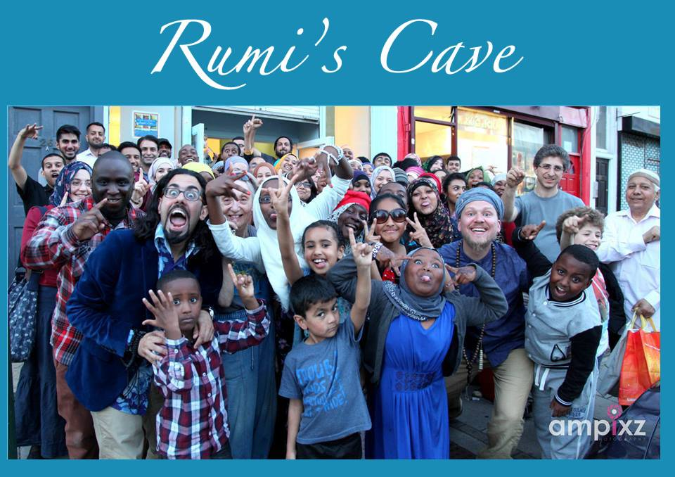
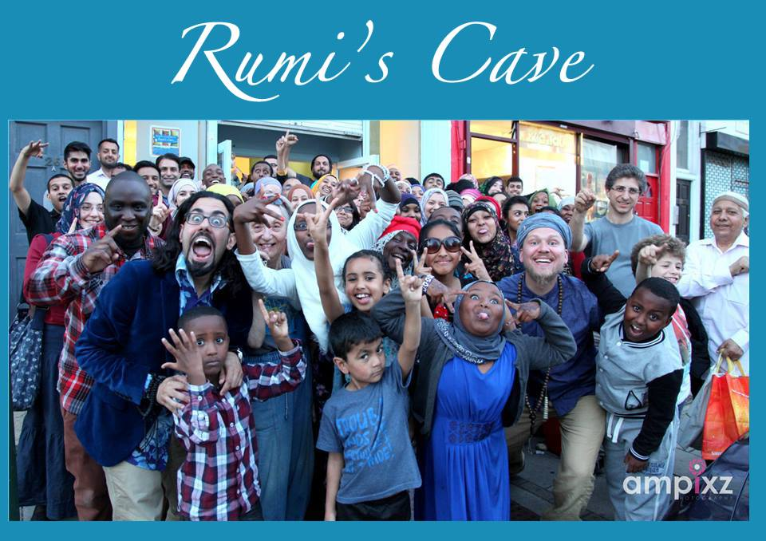

Rumi's Cave
Rumi’s Cave is a community hub, and a cultural arts and events space inspired by the legacy of the poet Jalal ad-Din Rumi. Rumi’s Cave is located in the heart of Kilburn in London and was initiated by Ulfa Aid.
The Cave offers an eclectic mix of programs and events, ranging from poetry and afternoon tea, to a variety of talks, courses and creative workshops.
Rooted in a vibrant and dynamic community, the Cave has managed to bring together a diverse group of local and international guests, who share a passion for culture, creativity and learning. It also serves as a safe space where people from different backgrounds can come together and explore their cultures and identity.
Rumi’s Courses & Retreats
Led by Sheikh Ahmed Babikir, these programs aim to facilitate personal and spiritual development in the community, with open workshops, courses and talks. We also arrange a series of national and international retreats, focusing on a variety of themes to do with individual and spiritual development.
Our spiritual programs are open to all, regardless of background and beliefs, as we also hope to serve as a platform for intra-faith and interfaith dialogue.
Visit Rumi's Cave website
 
